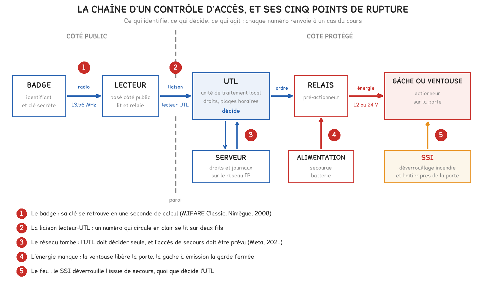
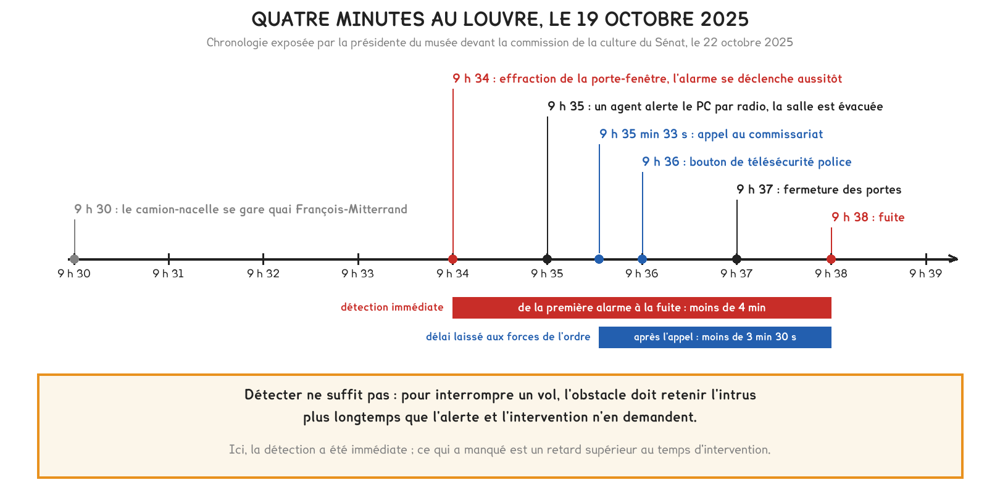

Document de formation du professeur — ne pas diffuser aux étudiants
Formation du professeur · BTS FED option C
Des badges MIFARE Classic cassés à Nimègue, des centres de données retardés par leur propre contrôle d'accès, quatre minutes entre l'alarme et la fuite au Louvre. Puis 150 000 caméras derrière un compte de support, six traducteurs filmés à leur poste et une norme d'image fixée en 2007, avec ce que chacun oblige à savoir sur l'identification, la porte, la détection, le débit et la durée de conservation.
Savoirs travaillés
Le contrôle d’accès, l’alarme intrusion et la vidéosurveillance sont trois domaines de B8-2 que le référentiel place au niveau 3 pour l’option C, sous les mêmes rubriques. Ils partagent une architecture : un organe qui identifie ou détecte, une unité qui décide ou enregistre, un organe qui agit ou conserve, et un réseau IP qui relie désormais l’ensemble.
Cinq des six cas qui suivent sont des incidents, et aucun n’est une panne de matériel : le badge, les détecteurs et les caméras ont fait ce pour quoi ils avaient été conçus. Ce qui a cédé est un maillon que le catalogue ne montre pas : un secret mal protégé, un délai mal compté, un compte trop puissant, une règle d’usage ignorée. Le sixième cas est un texte, la norme d’image imposée depuis 2007 aux systèmes qui filment le public.
Un système de sûreté se juge à son maillon le plus faible, et ce maillon est rarement l’appareil. B8-2 demande le principe, les grandeurs, les signaux, le choix et le paramétrage : c’est dans les deux dernières rubriques que se sont joués les cinq incidents de cette page.
La page Prof 4 a posé la distinction entre sûreté et sécurité, l’analyse de risques et le calcul d’une alimentation secourue. Ils ne sont pas repris ici, seulement appliqués.

En mars 2008, le groupe de sécurité numérique de l’université Radboud de Nimègue annonce avoir reconstitué CRYPTO1, l’algorithme de chiffrement propriétaire des cartes sans contact MIFARE Classic de NXP. Selon son communiqué du 12 mars 2008, environ un milliard de ces cartes ont été vendues dans le monde ; elles portent la carte de transport néerlandaise OV-chipkaart et servent aussi de badges d’entreprise pour l’accès aux bâtiments. L’équipe prévient les autorités et le fabricant avant de publier. NXP demande en justice l’interdiction de l’article ; le juge rejette sa demande le 18 juillet 2008, et l’article paraît à la conférence ESORICS la même année.
La longueur de la clé n’est pas la cause principale. Une clé de 48 bits offre 248, soit 2,8 × 1014 valeurs, dont l’essai exhaustif demandait neuf heures sur du matériel avancé selon le rapport TNO cité par l’université. L’attaque de Nimègue exploite la structure de l’algorithme et ramène le calcul à moins d’une seconde. Un chiffrement tenu secret n’est pas un chiffrement sûr : l’université invoque le principe de Kerckhoffs, selon lequel un système doit rester sûr quand son fonctionnement est public.
En août 2024, Philippe Teuwen (Quarkslab) publie l’analyse de la puce FM11RF08S, une variante « compatible MIFARE Classic » de Shanghai Fudan Microelectronics : une porte dérobée matérielle livre toutes les clés d’une carte en quelques minutes. Il indique avoir trouvé ces cartes dans de nombreux hôtels aux États-Unis, en Europe et en Inde, et conclut que le protocole est cassé par nature, quelle que soit la carte.
Pour aller plus loin
Identifier, c’est annoncer une identité : le badge présente un numéro. Authentifier, c’est prouver qu’on la détient : le badge répond à un défi que seul le détenteur de la clé sait résoudre.
| Niveau | Ce que le lecteur exploite | Ce qu’il faut pour copier le badge |
|---|---|---|
| Numéro seul | le numéro de série de la puce, ou un numéro en clair | le lire une fois, puis l’écrire sur une carte au numéro réinscriptible |
| MIFARE Classic | un secteur protégé par une clé de 48 bits et CRYPTO1 | retrouver la clé, ce que l’attaque de 2008 fait en moins d’une seconde |
| Cryptographie normalisée | un échange authentifié par un algorithme public, AES par exemple | aucune attaque pratique sur l’algorithme : le risque passe à la gestion des clés |
Un lecteur qui n’exploite d’un badge chiffré que son numéro de série redescend au premier niveau, quelle que soit la carte achetée. Pour la migration, la page produit DESFire de NXP (source commerciale) annonce des moteurs DES, triple DES et AES ; une clé AES de 128 bits offre 280, soit 1,2 × 1024 fois plus de valeurs qu’une clé de 48 bits.
Le format Wiegand, liaison historique entre lecteur et UTL, transmet l’identifiant par impulsions sur deux fils, D0 et D1, sous 5 V. Sa trame de 26 bits compte deux bits de parité, 8 bits de code de site (256 valeurs) et 16 bits de numéro de carte (65 536 valeurs). Rien n’y est chiffré : qui se branche sur les deux fils, derrière un lecteur posé côté public, lit le numéro et peut le rejouer. Le chiffrement du badge ne protège rien au-delà du lecteur si la liaison est en clair.
D’où l’architecture qui laisse le lecteur, côté attaquable, sans clé ni décision : il relaie un échange chiffré jusqu’à l’UTL, en zone protégée. Le guide de l’ANSSI et du CNPP Sécurisation des systèmes de contrôle d’accès physique et vidéoprotection (4 mars 2020, version 2.2 du 5 juin 2025) traite cette architecture et fournit en annexe des exigences qu’un acheteur peut imposer dans un appel d’offres.
Un parc MIFARE Classic ne se corrige pas par une mise à jour : la faiblesse est dans la carte et dans le protocole. Il se remplace, ou il se compense : code personnel sur les portes sensibles, lecteur qui refuse le simple numéro de série, journal qui signale un même badge à deux endroits incompatibles.
En classe. En DOMA17, ouvrir par la question « votre badge de cantine est-il identifié ou authentifié ? », qui sépare ce que la carte présente de ce qu’elle prouve. En DOMB19, faire relever ce que l’UTL de l’atelier exploite réellement, numéro de série ou secteur chiffré.
Le 4 octobre 2021, une commande lancée pendant une maintenance du réseau dorsal de Meta, destinée à en mesurer la capacité, coupe toutes les liaisons entre ses centres de données ; l’outil d’audit censé la bloquer ne l’arrête pas, à cause d’une erreur. Les serveurs de noms, conçus pour se retirer quand ils ne joignent plus les centres, retirent leurs annonces de routage, et les services deviennent injoignables.
Selon le compte rendu signé le lendemain par Santosh Janardhan, les ingénieurs ne peuvent plus atteindre les centres par les moyens habituels, qui passent par ce réseau, et doivent s’y rendre. Or ces bâtiments sont conçus pour être difficiles d’accès, et l’activation des protocoles d’accès sécurisés prend un temps supplémentaire.
Le cas ne parle pas d’une porte défaillante : il montre que l’accès physique devient le dernier chemin quand le réseau tombe, et l’auteur oppose « greatly increased day-to-day security vs. a slower recovery ». Reste à savoir où se prend la décision d’ouvrir. L’UTL tient les droits et les plages horaires, reçoit l’identifiant, décide et commande le relais ; le serveur gère la base et centralise les journaux. Une UTL qui décide seule continue d’ouvrir aux personnes autorisées quand le réseau tombe et transmet les passages à son retour ; une UTL qui interroge le serveur à chaque badge transforme toute panne de réseau en panne de porte.
Pour aller plus loin
| Organe | Sous tension | Sans énergie | Nom usuel |
|---|---|---|---|
| Gâche à émission de courant | libère le pêne pendant l’ouverture | reste fermée | sécurité négative |
| Gâche à rupture de courant | retient le pêne | libère la porte | sécurité positive |
| Ventouse électromagnétique | retient le vantail | libère la porte | sécurité positive, par construction |
Le mot « sécurité » y est pris au sens des personnes : la sécurité positive laisse sortir quand tout s’éteint. Le critère décisif est la sortie. Une gâche montée sur une serrure dont la béquille intérieure rétracte le pêne laisse toujours sortir : elle ne verrouille que l’entrée. Une ventouse retient le vantail dans les deux sens : c’est elle que visent les conditions posées aux issues de secours. Elle consomme en outre en permanence, quand la gâche à émission ne consomme que pendant l’ouverture : c’est l’exercice 2.
Un organe à sécurité négative commandé par une UTL dépendante du serveur additionne deux fragilités : réseau ou courant perdu, plus personne n’entre au badge, et la clé mécanique devient le seul accès. Qui la détient, et comment son usage est tracé, doit avoir été décidé avant la panne.
En classe. En DOMB19, couper le réseau de l’UTL, puis son alimentation, et relever pour chaque porte ce qui se passe au badge et à la poignée. En DOMA16, demander quelles portes doivent s’ouvrir quand tout s’éteint : la réponse vient de l’analyse de risques, la technique l’applique.
Le dimanche 19 octobre 2025 à 9 h 30, selon le récit fait le 22 octobre devant la commission de la culture du Sénat par la présidente-directrice du musée, Laurence des Cars, un camion-nacelle se gare quai François-Mitterrand. Des individus en gilets de chantier, simulant une opération de maintenance, se hissent jusqu’au balcon de la galerie d’Apollon et forcent la porte-fenêtre ; le détecteur de la porte se déclenche aussitôt, puis les alarmes de deux vitrines. Moins de quatre minutes après la première alarme, ils repartent avec neuf pièces du département des objets d’art ; la couronne de l’impératrice Eugénie, abandonnée dans la fuite, est retrouvée endommagée. Personne n’est blessé.

Chaque maillon a fonctionné, dans l’ordre et vite : détection immédiate, confirmation humaine une minute plus tard, appel des forces de l’ordre entre une demi-minute et une minute et demie après l’effraction. La chaîne n’a pas interrompu le vol pour autant, parce qu’une chaîne de détection ne retient personne. Elle ne sert que si un obstacle retient l’intrus plus longtemps que l’alerte et l’intervention n’en demandent.
tr > td + ta + ti
Au Louvre, td était nul et ta inférieur à une minute et demie ; entre l’appel et la fuite, il restait moins de trois minutes et demie à l’intervention.
Au sens de la page Prof 4, la protection périmétrique a joué son rôle : la détection a eu lieu à l’enveloppe. Ce qui a manqué relève de la mécanique et de l’organisation : un vitrage et des vitrines qui retiennent, une intervention qui arrive avant la fin. La Cour des comptes relève, le 6 novembre 2025, des retards considérables dans la mise à niveau des infrastructures de sûreté et de sécurité : de 2018 à 2024, 87 M€ d’entretien, de mise à niveau et de restauration, deux fois moins que les 169 M€ de rénovations muséographiques et d’acquisitions. La présidente a présenté un schéma directeur de sûreté de 80 M€, dont les travaux débutent en 2026.
Pour aller plus loin
L’article L. 613-6 du code de la sécurité intérieure qualifie d’injustifié l’appel de la police ou de la gendarmerie par un opérateur de surveillance à distance qui entraîne une intervention indue, faute d’une levée de doute préalable : des vérifications « de la matérialité et de la concordance des indices » laissant présumer un crime ou un délit flagrant. La sanction peut atteindre 450 € par appel injustifié. La levée de doute, par la vidéo, l’écoute ou un agent, allonge ta ; au Louvre, elle a été humaine et immédiate.
Côté matériel, la marque NF&A2P (application NF324, AFNOR Certification) certifie notamment la résistance à la fraude des équipements de détection d’intrusion, en types 1, 2 ou 3. Les grades de sécurité de la série EN 50131 se lisent dans la norme, payante, qui n’a pas été consultée pour cette page.
La formule de la page Prof 4 se dimensionne sur la veille ; le calcul complet d’une centrale le justifie : C = k × (Iv × tv + Ial × tal).
Données d’exemple : centrale 0,15 A, dix détecteurs à 0,015 A, clavier 0,05 A, transmetteur 0,08 A, soit Iv = 0,43 A ; veille exigée de 36 h ; alarme de 1,1 A pendant un quart d’heure ; k = 1,25. C = 1,25 × (0,43 × 36 + 1,1 × 0,25) = 1,25 × (15,48 + 0,275) = 19,7 Ah.
L’alarme ne pèse que 1,7 % du besoin ; dimensionner sur le courant d’alarme pendant 36 h donnerait 49,5 Ah, deux fois et demie trop. La durée exigée se lit dans le cahier des charges : les 36 h sont une donnée d’exemple.
En classe. En DOMA16 puis en DOMA18, faire construire la même chronologie pour l’atelier : détection, confirmation, appel, arrivée, avec leurs durées ; puis demander combien de secondes la porte retient un intrus décidé. L’écart conclut l’analyse de risques, et le DS É3 peut l’évaluer. En DOMB21, mesurer le délai entre l’ouverture d’un contact et le message du transmetteur.
Le 30 août 2024, la Federal Trade Commission annonce un accord avec Verkada, fournisseur de caméras administrées depuis son nuage. Selon la plainte, l’entreprise a subi au moins deux intrusions entre décembre 2020 et mars 2021 ; lors de celle de mars 2021, un pirate a pu accéder à plus de 150 000 caméras de clients en direct, dont certaines filmaient des hôpitaux psychiatriques et des cliniques de santé des femmes. L’accord impose un programme de sécurité de l’information, des audits, et une pénalité de 2,95 millions de dollars qui sanctionne des manquements à la loi CAN-SPAM sur les courriels commerciaux.
Une caméra IP est un ordinateur : un capteur, un encodeur, un serveur web d’administration, une pile réseau, reliés à un enregistreur, un logiciel de gestion ou un nuage, chacun paramétré par des comptes. Le périmètre d’une fuite est celui du compte compromis, pas celui des images vues : entre 150 000 caméras accessibles selon la FTC et 4 530 caméras, chez 97 clients, selon le rapport d’incident de Verkada, soit 3 %, l’écart mesure la puissance d’un compte de support que les attaquants n’ont exploitée qu’en partie.
La plainte reproche à Verkada de ne pas avoir exigé de mots de passe uniques et complexes, chiffré correctement les données ni sécurisé son réseau ; ces manquements relèvent de l’injonction et des audits, la pénalité visant les courriels. Le cours 2 traite des caméras enrôlées dans des réseaux de machines piratées.
Pour aller plus loin
| Chemin | Qui l’emprunte | Ce qui le ferme |
|---|---|---|
| local, depuis le réseau du bâtiment | l’installateur, l’exploitant | un réseau vidéo séparé du réseau bureautique, des comptes nominatifs, les mots de passe d’usine changés à la mise en service |
| distant, par l’Internet du client | l’exploitant d’astreinte, le mainteneur | un réseau privé virtuel plutôt qu’une redirection de port, une authentification à deux facteurs, un journal des connexions |
| par le nuage du fabricant | le fabricant et son support | un accès support ouvert par le client, limité dans le temps et journalisé, et la lecture du contrat sur ce point |
Chez Verkada, le troisième chemin passait par une interface capable d’emprunter la session d’un client, ouverte par un seul jeu d’identifiants d’administrateur. Les deux premiers se paramètrent à la mise en service ; la séparation des réseaux vue en DOMA6 limite ce qu’une caméra compromise peut atteindre.
Une caméra joignable depuis Internet par une redirection de port est un serveur web exposé, souvent avec le mot de passe de sa mise en service. Aucune caméra ne doit être joignable directement depuis Internet ; l’accès distant passe par un point d’entrée unique, authentifié et journalisé.
En classe. En DOMA19, poser sur un devis réel la question « qui, en dehors du client, peut voir les images ? », dont la réponse se lit dans le contrat de service. En DOMB22, faire l’inventaire des comptes de l’enregistreur de l’atelier et changer le mot de passe d’usine s’il est encore en place.
Par une délibération du 13 juin 2019 (SAN-2019-006), la formation restreinte de la CNIL inflige 20 000 € d’amende à une société parisienne de traduction de neuf salariés, que la presse identifie comme Uniontrad Company ; des salariés s’en plaignaient depuis 2013. Aux contrôles du 16 février et du 10 octobre 2018, la CNIL constate qu’une caméra du bureau des traducteurs filme en continu six postes de travail sans information des salariés, que les postes s’ouvrent sans mot de passe et que la messagerie n’a qu’un mot de passe commun. La mise en demeure du 26 juillet 2018, qui demandait notamment de déplacer la caméra et d’instaurer des mots de passe individuels, est restée sans effet.
Deux décisions plus récentes appliquent la même règle. Le 19 décembre 2024 (SAN-2024-021), la CNIL sanctionne de 40 000 € une petite entreprise immobilière dont deux caméras captaient en continu l’image et le son des salariés, dans des locaux de travail et de pause, visibles en direct par les dirigeants sur une application. Le 27 décembre 2023 (SAN-2023-021), elle inflige 32 M€ à Amazon France Logistique, entre autres pour une vidéosurveillance mal signalée et mal sécurisée sur deux sites ; le Conseil d’État ramène l’amende à 15 M€ le 23 décembre 2025 (n° 492830), mais confirme les griefs qui portent sur la vidéosurveillance.
Chaque règle rappelée par la CNIL se traduit en un réglage que l’installateur fait ou ne fait pas : pour leur partie vidéo, les trois décisions portent sur l’orientation, le son, les comptes et l’information. Les bureaux d’Uniontrad n’étant pas ouverts au public, aucune autorisation préfectorale n’y était requise ; un lieu ouvert au public relève en plus du code de la sécurité intérieure, objet du cas suivant.
Pour aller plus loin
| Règle rappelée par la CNIL | Le réglage ou le geste qui la met en œuvre |
|---|---|
| ne pas filmer les salariés à leur poste, sauf circonstances particulières, comme la manipulation d’argent | orientation de la caméra et masques de confidentialité sur les postes |
| ne filmer ni les zones de pause ni les toilettes | implantation vérifiée sur l’image, pas seulement sur le plan |
| conserver quelques jours, un mois au plus en principe | durée d’effacement automatique réglée dans l’enregistreur |
| réserver l’accès aux personnes habilitées | comptes nominatifs, droits par caméra, journal des consultations |
| ne pas enregistrer le son, sauf cas très particuliers | micro désactivé dans la configuration de la caméra |
| informer par un panneau et individuellement | panneau posé à la mise en service ; information individuelle par l’employeur (code du travail, art. L. 1222-4) |
| consulter les représentants du personnel | avant l’installation (code du travail, art. L. 2312-38) : une échéance à inscrire au planning du chantier |
La durée de conservation se règle dans l’enregistreur ; elle ne résulte pas de la taille du disque. Un enregistreur qui écrase « quand le disque est plein » conserve une durée qui varie avec le débit, donc avec l’activité, et qui dépasse facilement le mois sur un site calme enregistré sur détection de mouvement.
En classe. En DOMA19, faire juger l’image d’une caméra de l’atelier au regard des sept règles avant de parler de résolution. En DOMB22, faire régler une durée d’effacement de sept jours et un masque, puis vérifier sur un enregistrement relu que le masque s’applique à l’image enregistrée.
L’arrêté du 3 août 2007 portant définition des normes techniques des systèmes de vidéosurveillance (NOR IOCD0762353A), en vigueur dans sa version du 16 mars 2011, fixe ce que doit enregistrer un système qui filme un lieu ouvert au public. En plan étroit, il exige au moins 704 × 576 pixels, le format 4CIF, ou des vignettes de visage d’au moins 90 × 60 pixels, et douze images par seconde si les mouvements observés sont rapides ; ailleurs, 352 × 288 pixels, le format CIF, et six images par seconde. Il impose aussi l’horodatage de chaque séquence et un export sur un support non réinscriptible.
La résolution d’une caméra ne dit pas ce qu’elle permet de reconnaître : ce qui compte est le nombre de pixels qui tombent sur l’objet, donc la largeur du champ au plan de l’objet. La vignette de visage de l’arrêté se traduit en densité de pixels, et la densité en un couple résolution et objectif.
p = Nh / W avec W = 2 · d · tan(α / 2)
Lire la vignette de 90 × 60 pixels comme 60 pixels sur la largeur d’un visage d’environ 15 cm donne p = 400 pixels par mètre. Cette lecture est une hypothèse de calcul : l’arrêté ne fixe pas la largeur du visage.
Pour aller plus loin
Le champ maximal vaut W = Nh / 400, et la distance maximale d = W / (2 tan(α / 2)), avec tan 45° = 1 pour un objectif de 90° et 2 tan 15° = 0,536 pour un objectif de 30°.
| Image | Champ maximal | Distance maximale à 90° | Distance maximale à 30° |
|---|---|---|---|
| 4CIF, 704 × 576 | 1,76 m | 0,88 m | 3,28 m |
| 1080p, 1 920 × 1 080 | 4,80 m | 2,40 m | 8,96 m |
| 4 Mpx, 2 688 × 1 520 | 6,72 m | 3,36 m | 12,54 m |
| 4K, 3 840 × 2 160 | 9,60 m | 4,80 m | 17,91 m |
La norme de 2007 est dépassée en nombre de pixels par toute caméra récente : une 1080p en compte 5,1 fois plus que le 4CIF, une 4K 20,5 fois plus. Elle reste exigeante sur la géométrie : derrière un grand-angle de 90°, une 1080p n’identifie un visage qu’à moins de 2,40 m. Une caméra de porte se choisit par son angle de champ autant que par sa résolution.
Le débit d’une caméra dépend de la scène, du codec et de la qualité ; il se lit dans l’interface de la caméra ou l’outil du fabricant, jamais dans un tableau générique. Deux relations suffisent à juger un devis. Au premier ordre, à scène et qualité égales, le débit suit le nombre de pixels par seconde : la 4K quadruple les pixels de la 1080p, douze images par seconde doublent six. Le volume se déduit du débit sans approximation, V = D × t / 8 : 1 Mbit/s produit 106 × 86 400 / 8 octets, soit 10,8 Go par jour et 324 Go en trente jours.
En classe. En DOMA19, demander où poser, sur le plan d’entrée d’un ERP, une caméra qui identifie un visage au sens de l’arrêté de 2007 : les étudiants choisissent une résolution, puis constatent que l’angle décide. En DOMB22, faire mesurer le champ à 3 m et calculer la densité obtenue.
Tout ce qui précède raisonne en sûreté : refuser l’entrée, retarder, garder fermé quand l’énergie manque si l’analyse de risques le demande. Sur une porte placée sur un chemin d’évacuation, ce raisonnement cesse de valoir : la sécurité des personnes prime sur la sûreté des biens, et le règlement le traduit sans ambiguïté.
Le règlement de sécurité contre l’incendie des établissements recevant du public (arrêté du 25 juin 1980) n’admet le verrouillage électromagnétique d’une issue de secours qu’à des conditions que l’arrêté du 2 février 1993 a précisées : l’accord de la commission de sécurité, un dispositif de commande manuelle près de la porte, un boîtier à bris de glace par exemple, et un déverrouillage automatique dès le déclenchement du processus d’alarme, dans les conditions de l’article MS 60. Une temporisation n’y est admise que bornée : 8 secondes au plus, ou 3 minutes lorsque l’établissement dispose d’un service de sécurité, dans la rédaction de 1993.
| Porte d’accès ordinaire | Issue de secours verrouillée | |
|---|---|---|
| Organe courant | gâche électrique, la sortie restant libre par la béquille | ventouse, qui verrouille aussi la sortie |
| Sans énergie | l’état se choisit par l’analyse de risques | la porte se libère |
| En cas d’incendie | l’UTL décide | le SSI déverrouille, quoi que décide l’UTL |
| Rôle de la sûreté | empêcher et retarder | détecter et constater |
Sur une issue de secours, la sûreté cesse d’empêcher ; elle détecte. Un contact d’ouverture relié à la centrale intrusion, un avertisseur local, une caméra et le journal de l’UTL remplacent le verrou qu’on n’a pas le droit de garder fermé. Le cas du Louvre prend ici son sens inverse : on ne retarde personne sur une issue de secours, donc le retard se place ailleurs, sur les vitrines, les réserves, les coffres.
Pour aller plus loin
Le boîtier de commande manuelle agit sur l’alimentation de la ventouse, pas sur un programme : il doit libérer la porte même si l’UTL est en panne. C’est la sécurité positive appliquée au câblage ; elle se vérifie à la réception, UTL débranchée, et l’ouverture est ensuite journalisée par l’UTL et signalée par la centrale intrusion. La question à poser aux étudiants : « si l’UTL brûle en premier, la porte s’ouvre-t-elle ? » Un schéma qui n’y répond pas en dix secondes est à refaire.
Le critère est la sortie, pas l’entrée. Une gâche électrique sur une serrure dont la béquille intérieure rétracte le pêne laisse toujours sortir : son état sans énergie est une affaire de sûreté. Une ventouse retient le vantail dans les deux sens : c’est elle que visent les conditions du règlement, et elle ne se pose jamais sans commande manuelle ni déverrouillage par le SSI.
La séance vérifie qu’un disque tient la durée de conservation. Le bureau d’études part de l’autre bout : l’enregistreur est choisi, la durée est fixée par l’analyse et plafonnée par la loi, le nombre de caméras découle du plan. Ce qui reste libre est le débit de chaque caméra, qui décide ensuite de la résolution, de la cadence et du mode d’enregistrement.
Dmax = 8 · Cu / (N · t · r)
Un disque de 12 To s’affiche 10,9 Tio dans un système d’exploitation : les fabricants comptent en puissances de 10, les logiciels souvent en puissances de 2.
Exemple : quatre disques de 4 To en RAID 5 offrent 3 × 4 = 12 To utiles ; avec 10 % de réserve, Cu = 10,8 To, pour seize caméras.
| Conservation | En continu, r = 1 | Sur mouvement, r = 0,4 |
|---|---|---|
| 7 jours | 8,93 Mbit/s | 22,3 Mbit/s |
| 14 jours | 4,46 Mbit/s | 11,2 Mbit/s |
| 21 jours | 2,98 Mbit/s | 7,44 Mbit/s |
| 30 jours, maximum de l’article L. 252-5 | 2,08 Mbit/s | 5,21 Mbit/s |
Chaque jour de conservation supplémentaire se paie en débit, donc en qualité d’image. Garder trente jours au lieu de sept divise par 4,3 le débit autorisé, et c’est souvent la différence entre une image qui identifie et une image qui ne fait que constater.
Pour aller plus loin
Un flux de 1 Mbit/s remplit 0,324 To en trente jours : un système se vérifie de tête, N × D × 0,324 To par mois, soit 16 × 2,08 × 0,324 = 10,8 To pour l’exemple.
Premier piège : r n’est pas une constante. Un couloir de nuit enregistre peu, un hall aux heures d’affluence en continu ; le jour le plus chargé doit encore tenir. Second piège : en débit variable, le débit réel n’est pas celui de la fiche. Il se mesure sur le site, de jour et de nuit, sur l’enregistreur.
Le calcul se retourne une seconde fois quand l’identification impose le débit : à 4 Mbit/s sur seize caméras pendant trente jours, il faut 16 × 4 × 0,324 = 20,7 To utiles, soit, en RAID 5 à quatre disques avec 10 % de réserve, des disques de 7,68 To au moins.
Pour aller plus loin
Énoncé. Un enregistreur reçoit douze caméras qui émettent chacune 4 Mbit/s en continu, avec une conservation de quatorze jours. Quel volume faut-il ? Un disque de 8 To suffit-il ?
Résolution. Par caméra et par jour : 4 × 106 × 86 400 / 8 = 43,2 × 109 octets, soit 43,2 Go ; pour douze caméras, 518,4 Go par jour ; sur quatorze jours, 7 257,6 Go, soit 7,26 To. Le disque de 8 To suffit, avec 0,74 To de marge, soit 9,3 % ; il tiendrait 15,4 jours.
Vérification de plausibilité. Par la règle de 0,324 To par Mbit/s et par mois : 12 × 4 × 0,324 = 15,6 To pour trente jours, donc 7,3 To pour quatorze. Le système affichera 7,28 Tio pour le disque et 6,60 Tio pour les enregistrements.
Ce que l’étudiant doit rédiger. La formule avec ses unités, la division par huit justifiée, la comparaison dans une seule unité. L’erreur attendue est un débit en mégabits traité comme des mégaoctets.
Énoncé. Une UTL commande quatre portes, avec 4 h d’autonomie exigées. Sous 12 V, l’UTL consomme 0,25 A et chaque lecteur 0,10 A. Variante A : quatre ventouses de 0,5 A. Variante B : quatre gâches à émission de 0,3 A, alimentées 5 s par passage, 60 passages par heure et par porte. k = 1,25 ; ce sont des données d’exercice. Comparer les capacités, puis dire ce que fait chaque variante au bout des 4 h.
Résolution. Variante A : les ventouses consomment en permanence. I = 0,25 + 4 × 0,10 + 4 × 0,5 = 2,65 A ; C = 2,65 × 4 × 1,25 = 13,25 Ah. Variante B : en une heure, 4 × 60 × 5 = 1 200 s d’alimentation des gâches, soit un courant moyen de 0,3 × 1 200 / 3 600 = 0,10 A ; I = 0,25 + 0,40 + 0,10 = 0,75 A ; C = 0,75 × 4 × 1,25 = 3,75 Ah. La variante A demande 3,5 fois plus de batterie, et les ventouses y font 75 % du courant.
Au bout des 4 h. Batterie épuisée, les ventouses libèrent les quatre portes et le bâtiment est ouvert ; les gâches restent fermées, on n’entre plus qu’à la clé et l’on sort toujours par la béquille. La variante A convient à une issue de secours, la variante B à une porte d’accès dont la sortie reste mécanique.
Vérification de plausibilité. Avec une batterie de 7 Ah, la variante A tiendrait 2,1 h et la variante B 7,5 h.
Ce que l’étudiant doit rédiger. Le courant moyen d’un organe intermittent, calculé et non estimé, et une phrase qui relie l’organe à l’état de la porte sans énergie.
Énoncé. Une commune équipe sa médiathèque, fermée le dimanche et le lundi : six caméras en salles publiques, deux à l’entrée pour identifier les visages, deux dans la réserve et le bureau, fermés au public. Les huit caméras hors entrée émettent 3 Mbit/s, les deux d’entrée 6 Mbit/s, en continu ; chacune consomme 6,5 W en PoE. L’issue de secours arrière doit être verrouillée hors ouverture. Proposer une durée, dimensionner le stockage, vérifier l’identification et régler la porte.
Choisir la méthode avant de calculer. Le plan se découpe par régime, pas par caméra. Salles publiques et entrée relèvent du code de la sécurité intérieure : autorisation préfectorale, cinq ans renouvelables, un mois de conservation au plus. La réserve et le bureau relèvent du RGPD et du code du travail ; la caméra du bureau ne doit pas filmer un poste, elle est réorientée ou supprimée.
La durée. Elle se justifie par le délai de constat, pas par le disque : un incident du samedi soir est constaté le mardi, l’extraction demande quelques jours de plus, et sept jours suffisent.
Le stockage. Débit total : 8 × 3 + 2 × 6 = 36 Mbit/s ; volume : 36 × 10,8 = 388,8 Go par jour, soit 2,72 To pour sept jours. Un disque de 4 To laisse 32 % de marge ; trente jours auraient demandé 11,7 To.
L’identification. La caméra d’entrée est une 1080p à 6 m de la porte. Avec un objectif de 30°, le champ vaut 2 × 6 × tan 15° = 3,22 m, soit 597 pixels par mètre : un visage de 15 cm occupe 90 pixels, au-delà des 60 retenus. Avec un objectif de 90°, le champ vaut 12 m et le visage 24 pixels : l’image constate, elle n’identifie pas.
Le PoE et la porte. Dix caméras de 6,5 W demandent 65 W, soit un budget PoE de 78 W avec 20 % de réserve. L’issue de secours reçoit une ventouse, un boîtier de commande manuelle et un déverrouillage par le SSI, après accord de la commission de sécurité ; sa sûreté repose sur un contact d’ouverture et une caméra.
Ce que l’étudiant doit rédiger. Le découpage par régime, la durée justifiée par le délai de constat, le calcul de densité, et pourquoi la sûreté de l’issue de secours ne repose pas sur son verrou.
| Grandeur | Ordre de grandeur |
|---|---|
| Clé d’une carte MIFARE Classic | 48 bits, soit 2,8 × 1014 valeurs ; calculée hors ligne en moins d’une seconde |
| Clé AES d’une carte récente | 128 bits, soit 1,2 × 1024 fois plus de valeurs qu’en 48 bits |
| Trame Wiegand de 26 bits | 256 codes de site, 65 536 numéros de carte, aucun chiffrement |
| Temporisation d’une issue de secours verrouillée | 8 s, ou 3 min avec service de sécurité (rédaction de 1993) |
| Louvre, de la première alarme à la fuite | moins de 4 min |
| Louvre, de l’effraction à l’appel au commissariat | entre une demi-minute et une minute et demie |
| Sanction d’un appel injustifié, faute de levée de doute | jusqu’à 450 € par appel |
| Résistance à la fraude NF&A2P | types 1, 2 ou 3 |
| Verkada, caméras accessibles au compte compromis | plus de 150 000 |
| Verkada, caméras exposées selon l’entreprise | 4 530, chez 97 clients, soit 3 % |
| Conservation des images | quelques jours en général, un mois au plus |
| Autorisation préfectorale de vidéoprotection | 5 ans, renouvelable |
| Norme d’image de 2007 | 704 × 576 en plan étroit, 352 × 288 sinon ; 12 ou 6 images par seconde |
| Vignette de visage minimale | 90 × 60 pixels, soit environ 400 pixels par mètre |
| Champ maximal à 400 pixels par mètre | 1,76 m en 4CIF, 4,8 m en 1080p, 9,6 m en 4K |
| Volume d’un flux de 1 Mbit/s | 10,8 Go par jour, 324 Go en trente jours |
| PoE, puissance côté source | 15,4 W, puis 30 W |
| Journaux d’un contrôle d’accès biométrique | six mois glissants au plus |
| Amendes de la CNIL citées | 20 000 € en 2019, 40 000 € en 2024, 32 M€ ramenés à 15 M€ |
Trois réflexes suffisent à trier la plupart des affirmations : 1 Mbit/s en continu remplit 10,8 Go par jour ; une image se juge en pixels par mètre au plan de l’objet, pas en mégapixels ; une alarme ne retient personne, seul un obstacle retient. Une valeur qui contredit l’un des trois mérite qu’on refasse le calcul.
Pour aller plus loin
Parce que la loi ne le permet pas, et le disque non plus. Pour un lieu ouvert au public, l’article L. 252-5 plafonne la conservation à un mois hors enquête judiciaire ; pour un lieu de travail, la CNIL rappelle que quelques jours suffisent en général. Seize caméras à 2 Mbit/s produisent 126 To par an, près de douze fois la capacité utile de l’enregistreur de l’exemple. Et chaque image conservée peut fuir : chez Verkada, les attaquants ont ouvert 87 archives vidéo.
Non, pour trois raisons de conception. L’alimentation est secourue par une batterie, et la coupure du secteur doit être signalée. Elle se trouve du côté protégé : la couper suppose d’être déjà entré. Et une issue de secours n’offre en général aucune prise côté extérieur, tandis que son ouverture déclenche le contact relié à la centrale intrusion. La libération sans énergie y est voulue : elle protège les occupants.
Tout ce que ce numéro ouvre. Un numéro lu sans authentification se copie en une lecture ; la protection ne vient alors que de ce qui entoure le badge : des plages horaires étroites, un code personnel sur les portes sensibles, un journal qui fait apparaître un passage incohérent. La question utile est donc « que protège la porte qu’il ouvre ? » : un badge de parking et un badge de salle serveur n’appellent pas la même technologie, et l’analyse de risques de DOMA16 les départage.
Parce que le règlement type de la CNIL, la délibération n° 2019-001 du 10 janvier 2019, en fait une exception à justifier : l’employeur doit documenter le besoin d’un niveau de protection élevé et le choix de la biométrie plutôt qu’une autre technologie. Le gabarit se conserve de préférence sur un support détenu par la personne, badge ou carte à puce, et les journaux d’accès ne dépassent pas six mois glissants. L’argument technique complète l’argument juridique : un badge compromis se remplace, une empreinte ne se révoque pas.
À angle égal, oui. À 8 m, une 4K derrière un objectif de 90° couvre 16 m de largeur, soit 240 pixels par mètre ; une 1080p derrière un objectif de 30° couvre 4,29 m, soit 448 pixels par mètre, près du double, avec quatre fois moins de pixels à transmettre et à stocker.
La résolution se choisit avec l’angle, jamais seule. C’est la leçon de l’arrêté de 2007, qui fixe une taille de visage et non un nombre de mégapixels.
Sources consultées le 13 septembre 2026.
Page de formation, réservée au professeur. Elle s'appuie sur des cas réels documentés ; les sources sont données en fin de page.